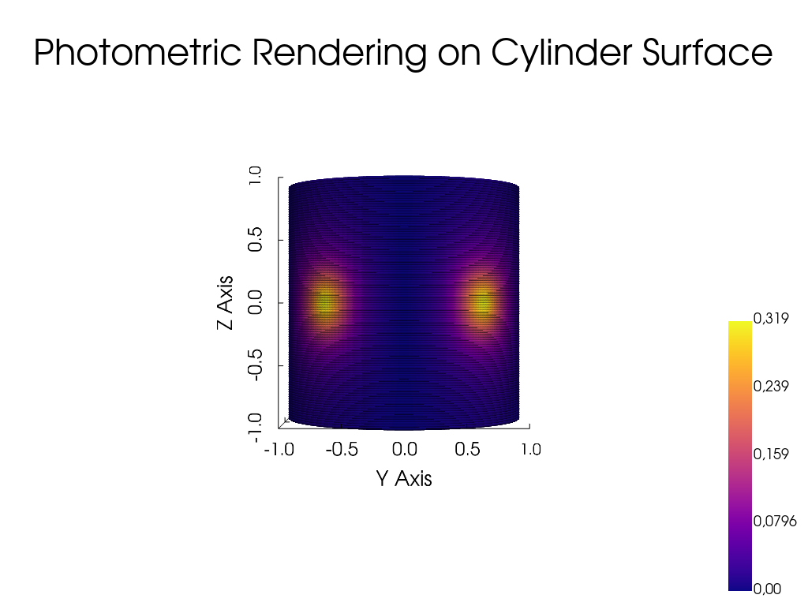

Note
Go to the end to download the full example code.
Rendering Photometric Properties on a Cylinder#
This example demonstrates how to use the Bouguer law and Ward’s BRDF model
from the pysdic library to render photometric properties on a cylindrical mesh.
See also
pysdic.compute_bouguer_law()- Official documentation for the Bouguer law function.pysdic.compute_brdf_ward()- Official documentation for Ward’s BRDF function.
Note
Other implemented BRDF models can be use in a similar way, such as Beckmann’s model
using the pysdic.compute_brdf_beckmann() function.
Define some points on a cylinder surface#
Construct some points on a cylinder surface using cylindrical coordinates. The cylinder is defined by its radius and height range.
import numpy
theta_min = -numpy.pi
theta_max = numpy.pi
height_min = -1.0
height_max = 1.0
radius = 1.0
nt = 1000 # Number of points along the circumference
nh = 100 # Number of points along the height
theta = numpy.linspace(theta_min, theta_max, nt)
height = numpy.linspace(height_min, height_max, nh)
theta_grid, height_grid = numpy.meshgrid(theta, height)
# points
x = radius * numpy.cos(theta_grid)
y = radius * numpy.sin(theta_grid)
z = height_grid
points_coordinates = numpy.stack([x.flatten(), y.flatten(), z.flatten()], axis=1) # (N_points, 3)
# normals
normals_x = numpy.cos(theta_grid)
normals_y = numpy.sin(theta_grid)
normals_z = numpy.zeros_like(normals_x)
points_normals = numpy.stack([normals_x.flatten(), normals_y.flatten(), normals_z.flatten()], axis=1) # (N_points, 3)
Define light source and view directions#
Define the light source direction and observer position for the photometric rendering.
For this example, we will use two light sources positioned at different locations. We also define the observer position and the objective is the render the appearance of the cylinder as seen from this position.
light_positions = numpy.array([
[1.0, 1.0, 0.0],
[1.0, -1.0, 0.0]
]) # (N_light_sources, 3)
observer_positions = numpy.array([5.0, 0.0, 0.0]) # (3,)
Compute photometric properties using Bouguer law and Ward’s BRDF model#
Use the compute_bouguer_law and compute_brdf_ward functions to compute
the photometric properties at the defined points on the cylinder surface.
The first one is the ratio between irradiance \(E\) at source intensity \(I\), the second one is the BRDF ratio between outgoing radiance \(L_o\) and incoming irradiance \(E\), using 3 parameters: diffuse reflectance \(\rho_d\), specular reflectance \(\rho_s\), and surface roughness \(\sigma\) (See the official documentation for more details).
Assuming a given intensity for the light sources \(I = 1.0\), the image brightness is proportional to the incoming radiance \(L_o\) on the camera sensor.
from pysdic import compute_bouguer_law, compute_brdf_ward
bouger_law_ratio = compute_bouguer_law(
surface_points=points_coordinates,
surface_normals=points_normals,
light_positions=light_positions,
) # (N_points, N_light_sources)
print(f"Bouguer law ratio shape: {bouger_law_ratio.shape}, min: {bouger_law_ratio.min()}, max: {bouger_law_ratio.max()}")
brdf_ward_values = compute_brdf_ward(
surface_points=points_coordinates,
surface_normals=points_normals,
light_positions=light_positions,
observer_positions=observer_positions,
parameters = [0.1, 0.1, 0.5] # rho_d, rho_s, sigma
) # (N_points, N_light_sources, N_observers, N_models)
# Here N_observers = 1 and N_models = 1, so we can squeeze these dimensions
brdf_ward_values = brdf_ward_values[:, :, 0, 0] # (N_points, N_light_sources)
print(f"BRDF Ward values shape: {brdf_ward_values.shape}, min: {brdf_ward_values.min()}, max: {brdf_ward_values.max()}")
# Compute the radiance
radiance = bouger_law_ratio * brdf_ward_values # (N_points, N_light_sources)
# Sum the contributions from all light sources
total_radiance = numpy.sum(radiance, axis=1) # (N_points,)
print(f"Total radiance shape: {total_radiance.shape}, min: {total_radiance.min()}, max: {total_radiance.max()}")
Bouguer law ratio shape: (100000, 2), min: 0.0, max: 5.822776397789505
/home/fdahe241/Programs/pysdic/docs/source/../../pysdic/core/photometric_operations.py:396: RuntimeWarning: divide by zero encountered in divide
brdf = (rho_d / numpy.pi) + (rho_s / (4 * numpy.pi * sigma**2 * numpy.sqrt(cos_theta_i * cos_theta_0))) * \
/home/fdahe241/Programs/pysdic/docs/source/../../pysdic/core/photometric_operations.py:396: RuntimeWarning: invalid value encountered in multiply
brdf = (rho_d / numpy.pi) + (rho_s / (4 * numpy.pi * sigma**2 * numpy.sqrt(cos_theta_i * cos_theta_0))) * \
BRDF Ward values shape: (100000, 2), min: 0.0, max: 0.07336558608523565
Total radiance shape: (100000,), min: 0.0, max: 0.318519420048296
Visualize the rendered photometric properties on the cylinder surface#
Lets build a Point Cloud object to visualize the rendered photometric properties on the cylinder surface using pyvista.
from pysdic import PointCloud
pc = PointCloud(points_coordinates)
pc['radiance'] = total_radiance
pc.visualize(
property='radiance',
property_cmap='plasma',
point_size=5,
camera_position=[10.0, 0.0, 0.0],
camera_view_up=[0, 0, 1],
camera_focal_point=[0, 0, 0],
title="Photometric Rendering on Cylinder Surface"
)

Total running time of the script: (0 minutes 0.361 seconds)